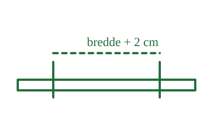
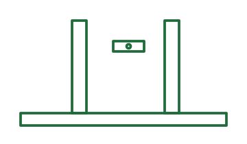
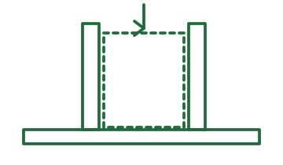
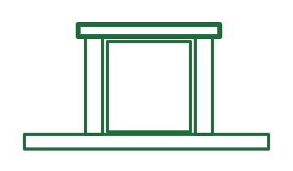

Demoveiledning. Ikke fra produsenten.
Slik setter du opp et glassfelt med stendere og dekklist. Regn med cirka en time per felt for to personer.
Du trenger: Vater, tommestokk, blyant, drill med 6 mm bor, skrutrekker, gummiklubbe
Mål bredden på glasset og legg til 2 cm. Merk senter for hver stender langs rekkverket. Sjekk at stenderhøyden passer glasshøyden, for eksempel 80,1 cm stender til 80 cm glass.

Forbor med 6 mm bor. Skru stenderne fast og kontroller med vater at de står i lodd begge veier før du strammer helt.

Legg gummilisten i sporet. Løft glasset inn ovenfra, to personer. Banke forsiktig med gummiklubbe til glasset sitter jevnt.

Klikk dekklisten på toppen av glasset og stenderne. Den beskytter kanten og gir et ryddig avslutt.
